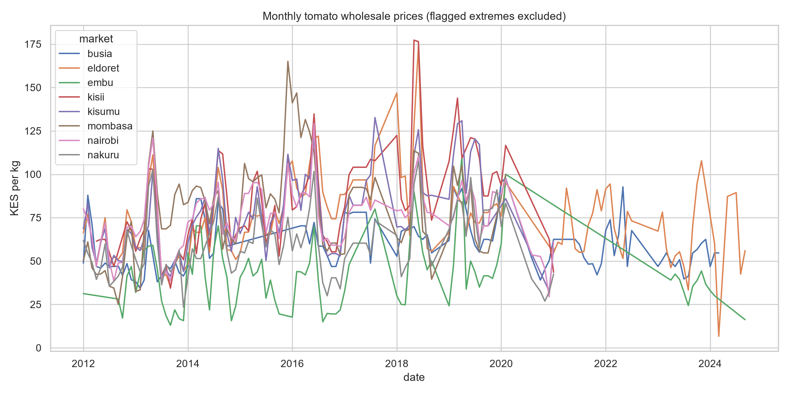

01 Active / developing
Kenya Agricultural Market Intelligence
From price data to practical market intelligence.
Using tomato as its first value chain, this reproducible project integrates market prices, national production context, climate proxies and spatial context to examine price differences, seasonality and volatility across Kenyan markets.
Coverage 783 cleaned price records across eight markets, with no missing required fields.
Observed pattern Kisii and Mombasa had the highest average wholesale prices in the selected panel; Embu was the most variable.
The work documents coverage and uncertainty, distinguishing observed associations from causal claims.
